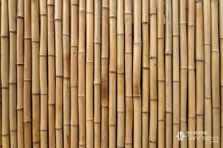
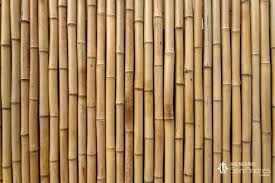
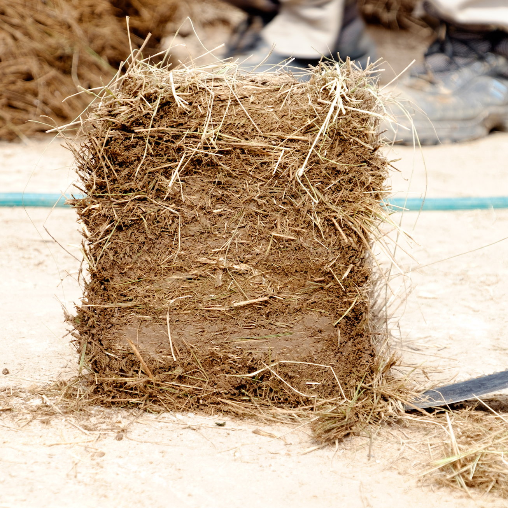
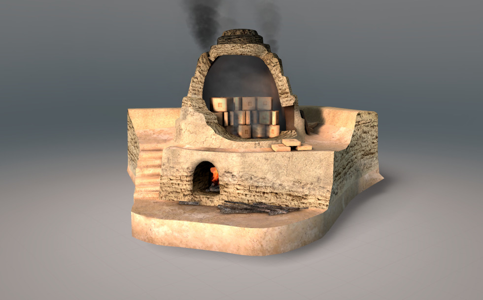

2. Obtención de Materia
El barro como recurso clave para la construcción y la cerámica
La mesopotamia histórica aprovechó su entorno, suelos con poca profundidad efectiva y generalmente formados por acumulaciones de agua fluyentes de los dos ríos que rodeaban la civilización.
La limitada disponibilidad de distintos materiales como la madera o la piedra llevó al desarrollo intensivo del ladrillo de barro, el cual se secaba al sol o se cocía.
¿Cómo conseguían estos materiales?
Los recursos obtenidos en su entorno principalmente eran:
1. Arcilla o barro
La arcilla era el material más abundante en las riberas del Tigris y el Éufrates. La mezclaban con paja picada y agua para darle más resistencia y evitar grietas.

Generalmente los ladrillos secados al sol eran usados en estructuras cotidianas. Los ladrillos cocidos eran usados en templos, zigurats o lugares donde el contacto con el agua era frecuente.
2. Juncos y cañas
Materiales obtenidos en las orillas de los ríos, usados para:
- Refuerzo de muros: "Armadura" natural entre capas de barro.
- Techos: Trenzados sobre vigas de madera.
- Cestería y mobiliario: Esteras, cestas y barcas.
 

3. Betún o bitumen
Recurso obtenido de pozos naturales, usado para impermeabilizar:
- Sellado de canales, estanques y cimientos.
- Unión de ladrillos cocidos en zonas húmedas.
4. Madera y piedra (Comercio)
Recursos escasos que debían importarse desde regiones montañosas (Zagros, Anatolia). Esta escasez impulsó la innovación con el barro.
Uso de materiales locales y aprovechamiento del entorno
La civilización mesopotámica se desarrolló en un entorno complejo: llanuras inundables, calor extremo y una marcada escasez de piedra y madera. Estas limitaciones impulsaron una notable capacidad de adaptación.
El barro: de problema a solución
-
Mezcla estratégica:
El barro se mezclaba con paja picada para aumentar la resistencia del ladrillo y
evitar grietas.
La proporción era cuidadosamente controlada.
 - Secado inteligente: Los ladrillos se secaban bajo sombra, evitando el sol directo del mediodía. El proceso duraba entre 7 y 15 días, reduciendo deformaciones.
-
Cocción selectiva:
Debido a la escasez de leña, los ladrillos cocidos se reservaban para zonas críticas.
Los hornos eran comunitarios y el proceso implicaba cooperación social.

Aprovechamiento del agua: una cuestión de supervivencia
Canales de riego
- Red extensa de canales principales y secundarios.
- Mantenimiento anual obligatorio por cada comunidad.
- Uso agrícola, urbano y para refrigeración por evaporación.
- Origen de numerosos conflictos y guerras.
Diques y compuertas
- Construidos con barro compactado, juncos y betún.
- Control de inundaciones y distribución del agua.
- Supervisión permanente, especialmente en primavera.
- Funcionarios especializados en su mantenimiento.
Sistemas de drenaje urbano
- Calles con pendiente y canales laterales.
- Reutilización de aguas residuales como fertilizante.
- Redes de alcantarillado rudimentarias en ciudades como Ur y Babilonia.